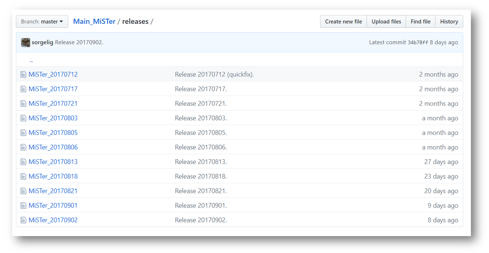
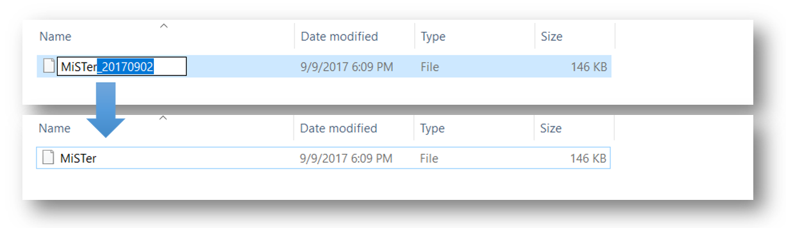
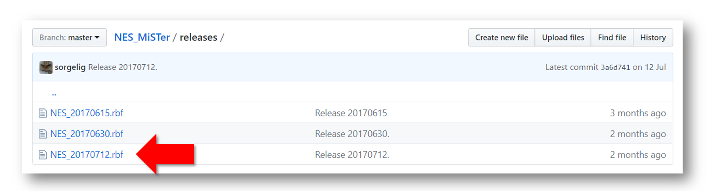
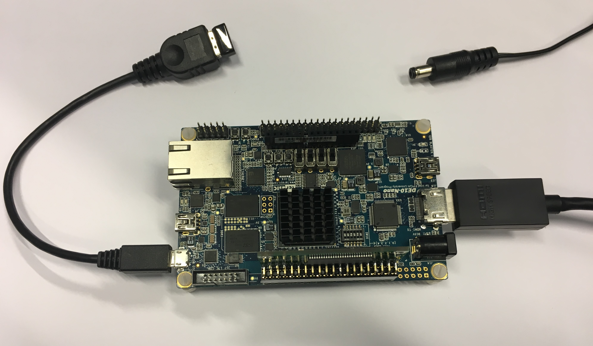

Setting up¶
This is an essential guide for your first time setup of the MiSTer system. It will guide you through the SD-card installation, help you update the MiSTer system files and shows you how to run a game on an example core (NES).
Requirements¶
You will need the following things to get everything started.
Main Components
- 1 x Windows 10 (or see this script) for SD card creation under macOS and Linux
- 1 x DE10-nano board + 5V power supply
- 1 x Internet connection
- 1 x SD Card reader
- 1 x Micro SD Card with at least 2GB of capacity
- 1 x Monitor + HDMI cable
- 1 x USB-OTG (Micro USB) adapter + USB keyboard
- 1 x SDRAM Board (Optional)
Check out the How to start and Input devices wiki pages for more information on the peripheral.
Prepare the SD-card¶
- Download the latest SD card installer from here
- Insert your SD card into your card reader.
- Extract the
release_201#####.rarfile. - Start
MiSTer SD Card Utility.exe

-
Make sure it says “U-Boot + Linux + MiSTer” in the “Image” field. - Newer versions of Mister SD card Utility will says
Boot + Filesin theImagefield. -
Select your SD card in the
Drivefield. If you have inserted the SD card after starting the Installer, hit theRefreshbutton and your SD card should appear. -
Press
Full Installand confirm the following Warning withYes. All data on the SD card will be deleted! Make sure to backup the SD-card before you execute this!

- Confirm the successful installation with
ok

- The Installer will open multiple windows which will ask you to format the drive. Don’t format the drive! Press
Cancelin all three windows.

- The SD card file explorer window will be opened twice, close one of them. The SD-card should contain the following three files / folder:

If you see only the menu.rbf file, hit F5 on your keyboard or right click > Refresh to refresh the window. You should see all three files now.
The files you see are:
* linux - Folder containing linux files
* config - The configuration folder where various config files are placed automatically. Those files usually don’t need any manual modifications.
- This folder is no more created by newer version of SD Card Utility, but it will be created automatically by the MiSTer hardware at first run (you can manually create and populate it if you want)
* menu.rbf - This is the actual MiSTer menu core, which you will see when you boot up the DE10-Nano board (GitHub).
* MiSTer - MiSTer main firmware (GitHub)
Update MiSTer files¶
The SD-card installer might be older then the actual binary releases of the MiSTer firmware and the menu core. Therefore, we want to bring those files up to date.
- Go to the MiSTer-devel/Main_MiSTer Repository and download the most recent
MiSTer_201#####firmware file on the bottom of the page.

- Rename the
MiSTer_201#####file toMiSTer

- Copy the file over to your SD-card and override the old
MiSTerfile.

- Repeat this for the menu core file: Go to the MiSTer-devel/Menu_MiSTer repository and download the most recent
menu_201#####.rbfcore file on the bottom of the page. Renamemenu_201#####.rbftomenu.rbfand override the old file on the SD card.
Get a core¶
We want to actually run a core like the NES or Amiga on our DE10-Nano FPGA board. Therefore, we have to copy a core .rbf file to the root of the SD-card. The sidebar on the right contains a list of MiSTer compatible cores. Check out the GitHub repository page of each core for specific information. The following description is a generic example based on the NES core, but it is applicable to most other cores.
- Click in the sidebar on Cores > “NES” or go directly through this link to the MiSTer-devel/NES_MiSTer release folder. Download the lates
NES_20######.rbfcore file

- Copy the core file to the root of the SD Card. Leave the date in the filename. By this, you know which version you are actually using.

- Create a new folder and name it for example
NES Games.

- Download a
.nesROM (Game) file and copy it into yourNES Gamesfolder. You have to google that by yourself…

Fire it up!¶
- Make sure the SDRAM-Board is attached to the GPIO header JP1 of the DE10-Nano (See SDRAM Wiki-Page for further instructions). Connect the board via HDMI to an monitor and via USB-OTG adapter to a keyboard. Do not connect the power supply yet.

- Remove the SD-card from your PC and insert it in the DE10-Nano board.
- Connect the power supply. This will turn on the DE10-Nano board. You will see the MiSTer menu on the monitor. You see in the menu the NES core we have copied to the SD Card. Hit the Enter key to start it.

- You will see a black screen. This is normal because no ROM is loaded yet. Press F12 to bring up the MiSTer menu. In order to run a game, select “Load *.NES” and hit Enter.

- This will bring up the SD-card root directory. Navigate into your “NES Games” folder and select the ROM you want to start and hit Enter..

- Congratulation, you successfully started you first game on your MiSTer!
Following steps¶
To get the most out of your MiSTer don’t forget to (at least) check out the following pages: - Configuration Files - Video Filters - Input devices
Additional notes¶
Once you’ve installed Release_20180115 or later, you can install future updates on MiSTer without removing the SD card. It’s done in 2 stages:
1) Copy everything from files folder of release to /media/fat using FTP client and then reboot MiSTer (use Left Shift + Left CTRL + Left Alt + Right Alt combination).
2) Log in via serial console or ssh and type updateboot then reboot again.
Usually bootloader has none or little change and not always requires update. But for better experience it’s advised to update the bootloader with every release. If somehow new version of Linux won’t be able to boot with previous bootloader, then simply use SD Install Tool to update the bootloader (Update Boot button).
If you wish to organize the cores into directories rather than have them stored on the root directory, you will need to add an underscore in front of the directory name.